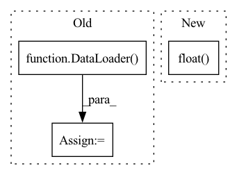

Pattern ID :34624

Before Change
dl_test = dataset.prepare("test", col_set=["feature", "label"], data_key=DataHandlerLP.DK_I)
dl_test.config(fillna_type="ffill+bfill")
test_loader = DataLoader(dl_test, batch_size=self.batch_size, num_workers=self.n_jobs)
self.model.eval()
preds = []
After Change
else:
end = begin + self.batch_size
x_batch = torch.from_numpy(x_values[begin:end]).float().to(self.device)
with torch.no_grad():
pred = self.model(x_batch).detach().cpu().numpy()
In pattern: SUPERPATTERN
Frequency: 4
Non-data size: 3
Instances
Fragment ID: 99462379
Project Name: microsoft/qlib
Commit Name: bee031af68cd0864c8329de13608c2d4feb58fc1
Time: 2021-07-21
Author: yl3851@uw.edu
File Name: qlib/contrib/model/pytorch_localformer.py
M Class Name: LocalformerModel
N Class Name: LocalformerModel
M Method Name: predict(3)
N Method Name: predict(2)
M Parent Class: Model
N Parent Class: Model
M File Name: qlib/contrib/model/pytorch_localformer.py
N File Name: qlib/contrib/model/pytorch_localformer.py
M Start Line: 209
M End Line: 223
N Start Line: 223
N End Line: 244
'>
Before Change
adjacency_matrix = BASE_GRAPH
raw_training_data = [(node_features, adjacency_matrix)]
graph_dataset = GraphDataset(raw_training_data)
training_data = DataLoader(graph_dataset, batch_size)
encoded_graph_shape_expected = [batch_size] + list(BASE_GRAPH_NODE_FEATURES.shape)
// When
for features, labels in training_data:
After Change
encoded_graph_shape_expected = list(BASE_GRAPH_NODE_FEATURES.shape)
// When
encoded_graph_shape = self.graph_encoder.encode(BASE_GRAPH_NODE_FEATURES, BASE_GRAPH.view(-1).float()).shape
// Then
self.assertEqual(encoded_graph_shape_expected, list(encoded_graph_shape))
'>
Fragment ID: 99462394
Project Name: kovanostra/message-passing-neural-network
Commit Name: a2f3bf3246cea04886b7f8f676402f9de1a00871
Time: 2020-04-26
Author: kovanostra@gmail.com
File Name: tests/domain/test_graph_encoder.py
M Class Name: TestGraphEncoder
N Class Name: TestGraphEncoder
M Method Name: test_encode_graph_returns_the_expected_shape(1)
N Method Name: test_encode_graph_returns_the_expected_shape(1)
M Parent Class: TestCase
N Parent Class: TestCase
M File Name: tests/domain/test_graph_encoder.py
N File Name: tests/domain/test_graph_encoder.py
M Start Line: 61
M End Line: 75
N Start Line: 76
N End Line: 82
'>
Before Change
dl_test = dataset.prepare("test", col_set=["feature", "label"], data_key=DataHandlerLP.DK_I)
dl_test.config(fillna_type="ffill+bfill")
test_loader = DataLoader(dl_test, batch_size=self.batch_size, num_workers=self.n_jobs)
self.model.eval()
preds = []
After Change
else:
end = begin + self.batch_size
x_batch = torch.from_numpy(x_values[begin:end]).float().to(self.device)
with torch.no_grad():
pred = self.model(x_batch).detach().cpu().numpy()
'>
Fragment ID: 99462389
Project Name: microsoft/qlib
Commit Name: bee031af68cd0864c8329de13608c2d4feb58fc1
Time: 2021-07-21
Author: yl3851@uw.edu
File Name: qlib/contrib/model/pytorch_transformer.py
M Class Name: TransformerModel
N Class Name: TransformerModel
M Method Name: predict(3)
N Method Name: predict(2)
M Parent Class: Model
N Parent Class: Model
M File Name: qlib/contrib/model/pytorch_transformer.py
N File Name: qlib/contrib/model/pytorch_transformer.py
M Start Line: 206
M End Line: 220
N Start Line: 222
N End Line: 243
'>
Before Change
adjacency_matrix = BASE_GRAPH
raw_training_data = [(node_features, adjacency_matrix)]
graph_dataset = GraphDataset(raw_training_data)
training_data = DataLoader(graph_dataset, batch_size)
node_encoding_expected = to.tensor([[0.3909883, 0.3909883]])
// When
for features, labels in training_data:
After Change
node_encoding_expected = to.tensor([[0.3909883, 0.3909883]])
// When
node_encoding = self.graph_encoder.encode(BASE_GRAPH_NODE_FEATURES, BASE_GRAPH.view(-1).float())[node]
// Then
self.assertTrue(to.allclose(node_encoding_expected, node_encoding))
'>
Fragment ID: 99462388
Project Name: kovanostra/message-passing-neural-network
Commit Name: a2f3bf3246cea04886b7f8f676402f9de1a00871
Time: 2020-04-26
Author: kovanostra@gmail.com
File Name: tests/domain/test_graph_encoder.py
M Class Name: TestGraphEncoder
N Class Name: TestGraphEncoder
M Method Name: test_encode_graph_returns_the_expected_encoding_for_a_node_after_one_time_step(1)
N Method Name: test_encode_graph_returns_the_expected_encoding_for_a_node_after_one_time_step(1)
M Parent Class: TestCase
N Parent Class: TestCase
M File Name: tests/domain/test_graph_encoder.py
N File Name: tests/domain/test_graph_encoder.py
M Start Line: 43
M End Line: 54
N Start Line: 69
N End Line: 69